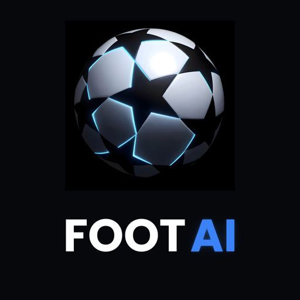

FOOT AI
Build de test · installation directe
Installer sur iPhone
Installer sur Android
iPhone v26 build 188 · Android v2.7.44
🆕 SCORE EN DIRECT + NOTIFICATIONS (01/11) : pendant un match, la carte de la liste passe en « ● LIVE 67’ » avec le score, et le bouton dit « ✅ EN BONNE VOIE » si notre prono tient (sinon « ⏳ EN COURS »). Dans la fiche du match, le grand rectangle vert montre la composition avant le coup d’envoi (dès qu’elle est publiée), puis le direct (minute, score, buteurs, cartons, notre prono) et l’animation « BUT ! » avec son (bouton 🔊 pour couper). Ouvre la fiche d’un match du jour : tu recevras « ⚽ BUT ! », « ❌ But annulé » et « ✅ Ton prono est gagné ! » pour ce match (interrupteur « Notifications du direct » dans Réglages). Score mis à jour toutes les 30 s (environ 30 s à 1 min 30 de retard).
🆕 CORRECTION CASES CHAMPIONNATS (30/10) : sur iPhone, toucher Champions League, Europa League ou « 6 autres » ouvrait parfois le match de la bannière « prono réussi » (ou de la carte « coup sûr du jour ») au lieu de changer de championnat — la photo de stade de la bannière débordait, invisible, sur les cases. Corrigé. Android n avait pas ce problème : même APK.
🆕 ESSAI GRATUIT RETIRÉ (23/10) : plus de « 3 jours gratuits » sur Google Play ni sur l App Store. La page d abonnement affiche maintenant « Passez à Premium », « Débloquer l accès » et « 19,99 €/an · Annulez quand vous voulez » ; les cartes verrouillées disent « 🔒 Débloquer toutes les analyses » (sur iPhone elles disaient encore « Essai gratuit 3 jours », corrigé dans ce build). Android : même APK qu hier, rien à changer.
🆕 ACCUEIL, 3 RETOUCHES (23/10) : carte BILAN IA refaite (maquette D) : gros anneau « 75 % · réussite », « 34 BONS PRONOS SUR 45 » sur une ligne, « matchs analysés par l IA », pastille « Saison 2026-27 » ; carte or « Coup sûr du jour » : la date seule, puis « Touche pour voir l analyse › » dessous ; Android : carte journée resserrée (« Journée 8 », la date et « 9 matchs » groupés à gauche, la pastille verte à droite, comme iPhone).
🆕 NOUVELLE PAGE D ABONNEMENT « vitrine » (23/10) : fond clair, le stade en haut avec « 3 JOURS GRATUITS » et « TOUS LES PRONOS. TOUS LES MATCHS. », la rangée « ce que tu débloques » (le prono, chances de victoire, synthèse IA, buteurs & cotes — on peut la faire glisser), la carte blanche du bilan réel (77 %, 891 matchs justes sur 1 164), les deux forfaits (annuel présélectionné, badge or « MEILLEURE OFFRE · −67 % »), bouton or « COMMENCER MES 3 JOURS GRATUITS » et dessous « 0 € aujourd hui · puis 19,99 €/an · annulez quand vous voulez ». Même page sur iPhone et Android, 18 langues. Sur un petit téléphone le haut défile, le bouton reste fixe.
🆕 RATISSAGE FINAL, 8 corrections (23/10) : bilan IA « 34 bons pronos sur 45 » = le bon chiffre en grand dans toutes les langues ; « ✓ RÉUSSITE » sur le score final bien traduit partout ; Android en arabe : barres de l analyse dans le bon sens ; iPhone : couleur des cotes correcte quand le pick est l équipe visiteuse, carte or sans espaces parasites (japonais/chinois/thaï), flèche du podium Défi dans le bon sens en arabe ; Android : titre de journée Résultats qui ne se coupe plus, « نقطة » au lieu de « pts » en arabe ; petites optimisations.
🆕 CARTES MATCH « verre » (22/10) : mêmes cartes, mêmes boutons (y compris ✅ / ❌), seulement l habillage : bande cyan lumineuse en haut, ligne de date dans une barre translucide, écussons un peu plus grands, rond VS en verre avec l anneau aux couleurs des clubs, boutons bombés avec reflet, ombre douce sous la carte ; un nom d un seul mot (Fenerbahçe) ne se coupe plus en deux.
🆕 JOURNÉE + BILAN IA (22/10) : compte à rebours en pastille verte dans la carte journée ; bilan IA sur toute la largeur avec anneau et « 34 bons pronos sur 45 » ; la case « 9 matchs » en double a disparu.
🆕 ACCUEIL (22/10) : bandeau « prono réussi » et carte « coup sûr du jour » sur fond stade de nuit (vrais écussons, score, anneau de confiance centré) ; tuile « 🌍 6 autres › » qui devient « réduire ⌃ » sans changer de couleur.
🆕 PARTAGE DU PRONO (22/10) : nouvelle image (stade de nuit, vrais écussons, carte du prono, QR code) et texte avec les deux liens iPhone / Android.
🆕 HAUT DE LA PAGE MATCH (22/10) : écussons + « BREST vs NICE » en titre, étiquette ligue · journée · date ; sous le terrain, « ↻ REVOIR » + « Partager le prono » (plus de pastille « Analyse terminée », plus de ↻ en haut).
🆕 CARTE DU PRONOSTIC sur le terrain (22/10) : écusson + nom + « gagne le match / ou match nul / pas de nul », la cote, un sélecteur à 3 cases (équipe · nul · équipe) avec ✓ sur les issues couvertes à la place du code « 1/X », et la barre de confiance. Match terminé : « SCORE FINAL 1-1 · ✓ RÉUSSITE » et la case du vrai résultat en vert (rouge si raté).
🆕 PAGE D ANALYSE, LES 8 CARTES (22/10) : chances de victoire + rappel « notre pick », lignes de comparaison avec deux barres (vert = le côté qui domine, rouge = l autre, jaune = nul) et meilleure valeur en pastille, en-tête écussons + noms partout, enjeu avec place et points, 5 derniers matchs avec les points pris, « quand les buts tombent » plus compact (explication dans le bouton i), confrontations avec date et score en pastille, buteurs dans une seule carte, cotes colorées par issue.
🆕 PAGE D ANALYSE (22/10) : titres avec une petite icône bleue (plus d emojis) ; synthèse IA redessinée (écusson, pastilles, barre de confiance, conclusion en encadré, ✓ facteur clé / ! point faible), toujours en bas de page.
🆕 CLASSEMENTS (22/10) : podium toujours or / argent / bronze (Défi ET championnats, plus la couleur du club) ; classement mondial : onglets SEMAINE / MOIS plus visibles (sélection bleue) et ligne « Semaine 5 · repart à zéro » dans une bande sombre lisible.
🆕 CARTE « TA PLACE » (21/10) : onglet Défi, grille terminée : carte or épurée (place en grand, « bons pronos » sous le score, message en pastille) + bouton bleu nuit texte or avec flèche.
PROFIL JOUEUR (21/10) : nouvelle fiche (stade, médaille, ses pronos match par match en vert/rouge, pronos cachés 🔒 tant que la grille est ouverte) + flèche › et « Touche un joueur » dans le classement Défi.
Classements championnats : une carte bleue par équipe.
Classement DÉFI plus lisible (21/10) : sous le podium, une carte bleue par joueur, textes plus grands et plus clairs.
Corrections (21/10) : anneau « 7/9 » avec les deux chiffres de même taille ; classement : trait de couleur (vert Ligue des champions, etc.) en bas des cartes du podium + légende juste sous le podium.
Fond blanc : cartes bleues mieux détachées, écussons de l app sur iPhone.
Page RÉSULTATS « affiche », iPhone + Android :
• En haut, le MATCH DE LA JOURNÉE en grande affiche (stade aux couleurs des 2 clubs, buteurs, pronostic IA).
• JOURNÉE 7 + anneau des pronostics justes, puis les autres matchs en cartes 2 par ligne.
• Toucher un match → sa fiche plein écran : temps forts (buts, cartons, score qui évolue) + statistiques.
🏟️ Classements « stade de nuit » (déjà testés) : inchangés.
À tester (iPhone) :
1. Choisir MLS (la bannière « prono réussi » apparaît sous les cases).
2. Toucher Champions League, puis Europa League, puis « 6 autres » : chaque case doit changer de championnat / ouvrir la grille, jamais ouvrir un match.
3. Même essai avec les autres championnats et avec la rangée du bas des « 6 autres ».
4. La bannière et la carte or s ouvrent toujours normalement quand on les touche.